2. Data Encryption Standard
DES (Data Encryption Standard) merupakan salah satu algoritma enkripsi yang termasuk ke dalam kriptografi kunci-simetri dan tergolong jenis cipher blok. Panjang kunci ekternal 64 bit (sesuai ukuran blok), tetapi hanya 56 bit yang dipakai (8 bit paritas tidak digunakan)
Skema Global DES
- Setiap blok (plainteks atau cipherteks) dienkripsi dalam 16 putaran
- Setiap putaran menggunakan kunci internal berbeda
- Kunci internal (56-bit) dibangkitkan dari kunci eksternal
- Setiap blok mengalami permutasi awal (IP), 16 putaran enciphering, dan inversi permutasi awal (IP-1)
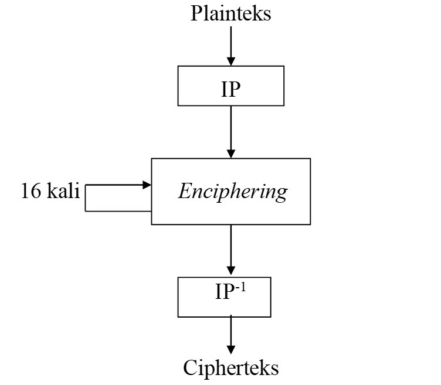
Keterangan :
- Blok plainteks dipermutasi dengan matriks permutasi awal (initial permutation atau IP)
- Hasil permutasi awal kemudian di-enciphering- sebanyak 16 kali (16 putaran). Setiap putaran menggunakan kunci internal yang berbeda
- Hasil enciphering kemudian dipermutasi dengan matriks permutasi balikan (invers initial permutation atau IP-1 ) menjadi blok cipherteks
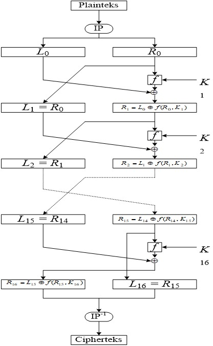
Skema Membangkitkan Kunci External
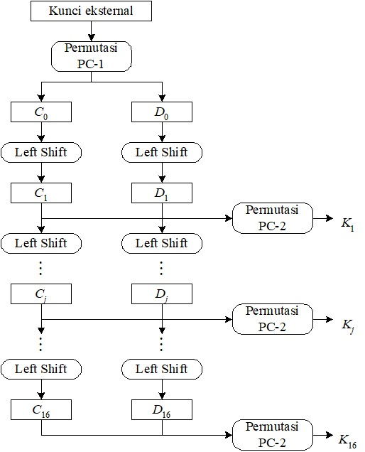
Contoh Soal
Plaintext = COMPUTER Kunci (dalam Hex) = 13 34 57 79 9B BC DF F1 (64 Bit)
Ubah plaintext menjadi Biner
C, ascii = 67, binary = 01000011
O, ascii = 79, binary = 01001111
M, ascii = 77, binary = 01001101
P, ascii = 80, binary = 01010000
U, ascii = 85, binary = 01010101
T, ascii = 84, binary = 01010100
E, ascii = 69, binary = 01000101
R, ascii = 82, binary = 01010010
Total ada 64 bit plaintex
Permutasi Awal
Tujuan : mengacak plainteks sehingga urutan bit-bit di dalamnya berubah
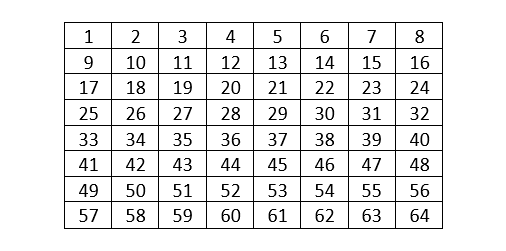
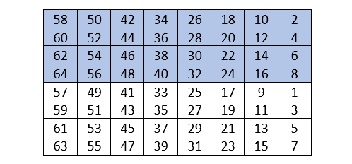
- Encoding setiap 64 bit data pada Plaintext dengan IP (Initial Permutation)
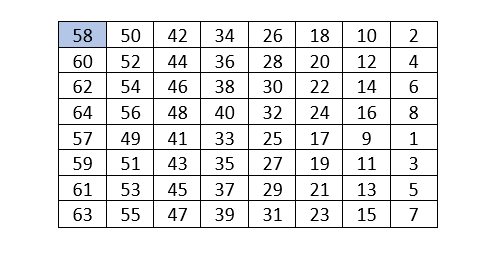
P = 01000011 01001111 01001101 01010000 01010101 01010100 01000101 01010010
Hasil akhir permutasi awal :
IP = 11111111 10111000 01110110 01010111 00000000 00000000 00000110 10000011
- Memecah Hasil IP
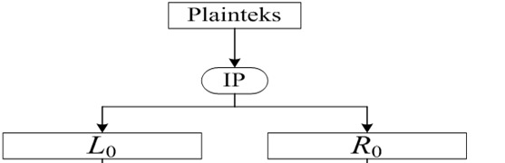
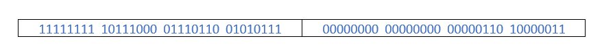
Jadi hasilnya :
L0 = 11111111 10111000 01110110 01010111
R0 = 00000000 00000000 00000110 10000011
- Pembangkitan Kunci
Kunci = 13 34 57 79 9B BC DF F1
Ubah K ke dalam fungsi Hexadecimal:
K = 00010011 00110100 01010111 01111001 10011011 10111100 11011111 11110001
Permutasikan menggunakan Tabel PC-1
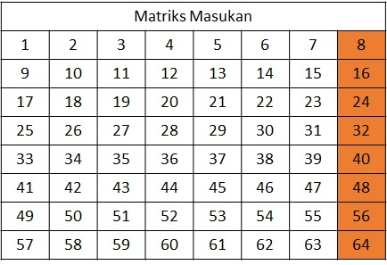
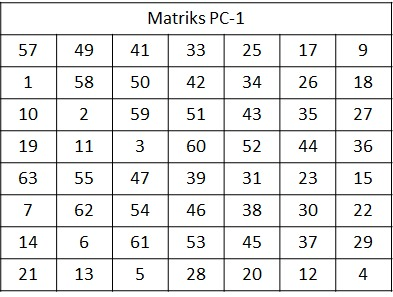
- Permutasi PC-1
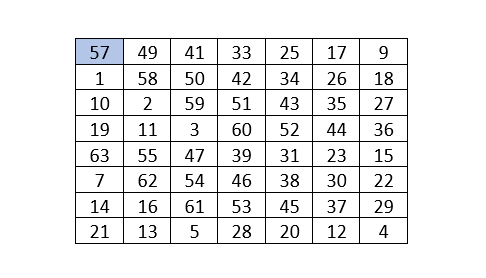
- K = 00010011 00110100 01010111 01111001 10011011 10111100 11011111 11110001
- K+= 1111000 0110011 0010101 0101111 0101010 1011001 1001111 0001111
- Pecah menjadi C0 dan D0
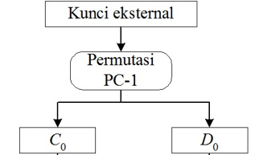
Selanjutnya nilai K+ dibagi menjadi 2 bagian kanan dan kiri,C0 dan D0 yang setiap bagian 28 bit panjangnya 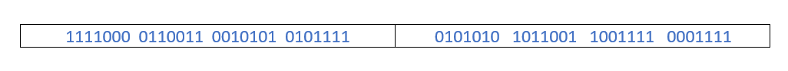
Hasilnya mendapatkan :
C0 = 1111000 0110011 0010101 0101111
D0 = 0101010 1011001 1001111 0001111
- Membuat Block Cn dan Dn
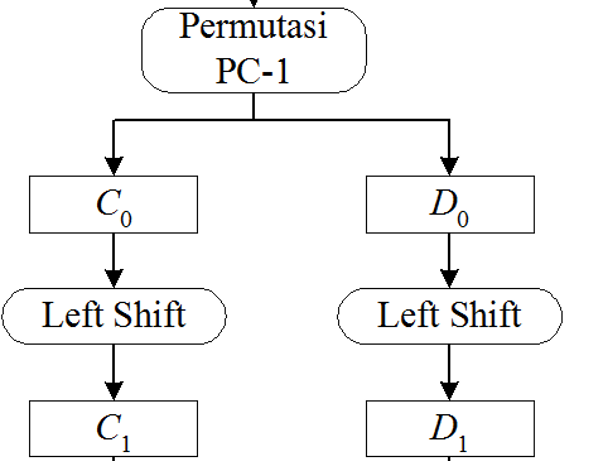
- Setelah mendapatkan C0 dan D0, sekarang kita membuat 6 blok Cn dan Dn yang setiap blok berasal dari Cn-1 dan Dn-1
- Selanjutnya, kedua bagian digeser ke kiri (left shift) sepanjang satu atau dua bit bergantung pada tiap putaran
- Operasi pergeseran bersifat wrapping atau round-shift
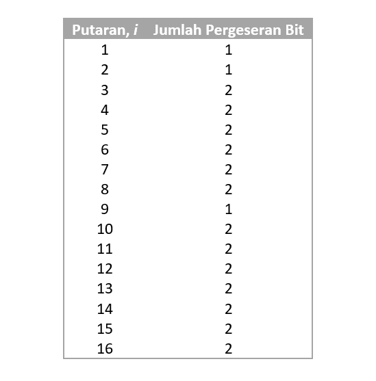
- Hasil C0 dan D0 yang di dapatkan
- Dari C0 dan D0 awal kita mendapatkan : 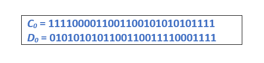